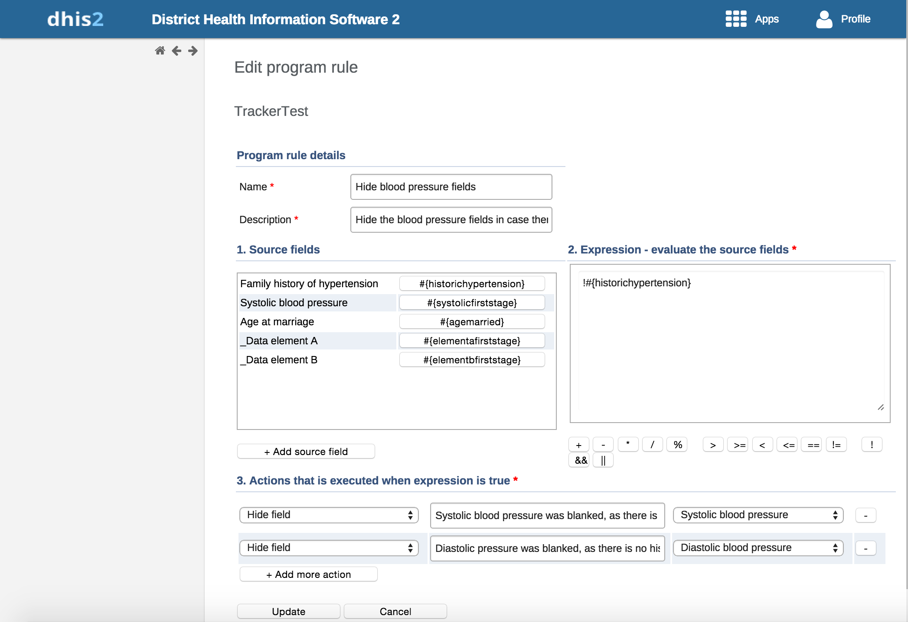
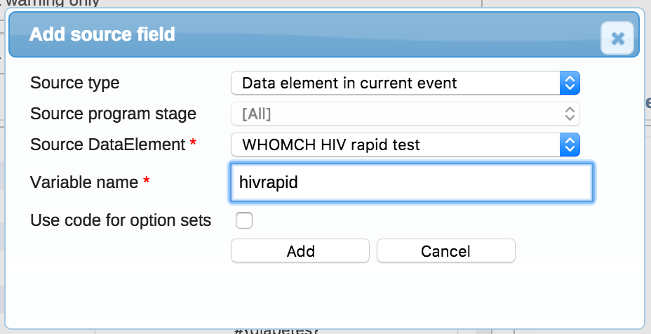
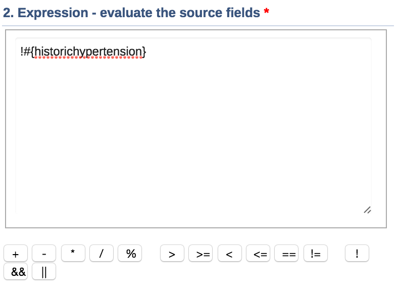
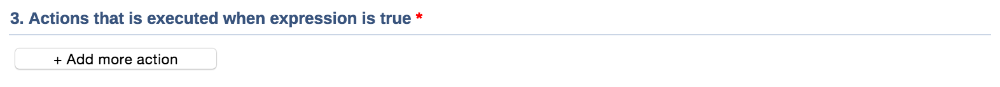
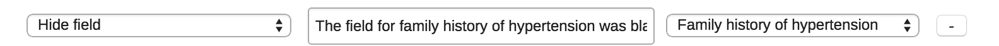
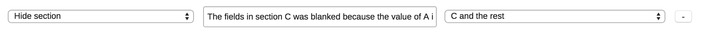
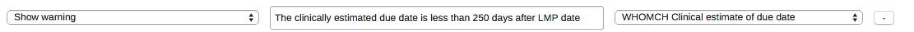
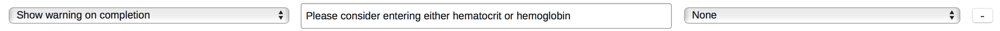
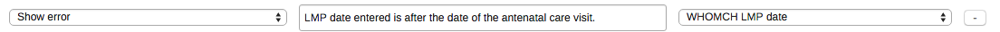
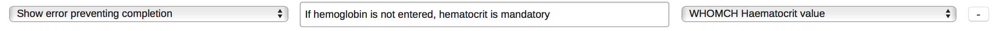

Program rules allows you to create and control dynamic behavior of the user interface in the Tracker Capture and Event Capture apps.
Program rules consist of:
an expression
one or several actions that are triggered in the user interface when the expression is true
An expression is built from operators, user-defined static values and source fields. The source fields represent attribute and data element values which will be evaluated as part of the expression.
During data entry, program rules expressions are evaluated each time the user interface is displayed, and each time a data element is changed. Most types of actions will take effect immediately when the user enters values in Tracker Capture and Event Capture apps.
The behaviors you can configure are skip logic and validation rules.
In the Programs / Attributes app, you manage the following program rule objects:
Table 27.9. Program rule objects in the Programs / Attributes app
|
Object type |
Available functions |
|---|---|
|
Program rule |
Create, edit, delete, show details and translate |
|  |
![[Note]](resources/images/admon/note.png) | Note |
|---|---|
A program rule belongs to exactly one program. |
Open the Program / Attributes app and click Program.
Click the program you want to add a program rule to and select View program rules.
A list of existing program rules for the selected program opens. If the program doesn't have any program rules, the list is empty.
Click Add new.
Enter program rule details:
Name
Description
These fields are not shown to the end user, and are only meant for the program administrator.
(Optional) Add the source fields you need in your expression.
Click Add source field.
Select Source type and fill in the options.
Click Add.
Create an Expression.
Create the actions executed when the expression is true.
Click Add more action.
Select an action, for example "Hide field".
(Optional) Enter text that is displayed.
Select a data element or program attribute.
Click Add.
Source fields represent a uniform way to include data values and attribute values in expressions. The source fields is defined as needed when creating expressions. When creating your first expression, you will typically have to define one or more source fields first, as expressions usually contain at least one data element or attribute value to be meaningful. The source fields is shared between all rules in your program, and by creating several rules, these will share the same library of source fields.
To add a source field, click the "+ Add source field" button under the source fields list. This will open the following dialog:
Add source field dialog
|  |
Source type: The source types is determining how the source field is populated with a value:
Data element in current event: Source fields with this source type will contain the data value from the same event that the user currently has open. This is the most commonly used source type, especially for skip logic(hide actions) and warning/error rules.
Data element in the newest event in program: This source type is used when a source field needs to reflect the newest known value of a data element, regardless of what event the user currently has open.
The source type is slightly differently populated in tracker capture and event capture.
Tracker capture: This source field will be populated with the newest data value collected for the given data element within the enrollment.
Event capture: This source field will be populated with the newest data value found within the 10 newest events in the same organisation unit.
The newest data value is determined with event date.
Data element newest event program stage: This source type works the same way as Data element in the newest event in program, except that it only evaluates values from one program stage. Can be useful in rules where the same data element is used in several program stages, and a rule needs to evaluate the newest data value from within one specific stage.
Data element from previous event: This source field will contain the value from a specified data element from a previous event. Only older events is evaluated, not including the event that the user currently has open. This source type is commonly used when a data element only should be collected once during an enrollment, and should be hidden in subsequent events. Another use case is making rules for validating input where there is an expected progression from one event to the next - a rule can evaluate whether the previous value is higher/lower and give a warning if an unexpected value is entered.
The source type is slightly differently populated in tracker capture and event capture.
Tracker capture: This source field will be populated with the newest data value collected for the given data element within the enrollment - but only evaluating the events that comes before the current event date.
Event capture: This source field will be populated with the newest data value collected within the 10 events preceding the current event date - not including the current event.
The newest data value is determined with event date.
Tracked entity attribute: Populates the source field with a specified tracked entity attribute for the current enrollment. This is the source type used when creating rules that should evaluate the data values entered during registration. It is also useful when creating rules that compares data in events to data entered during registration.
When selecting this option, fields for selecting program stage and data element is hidden, and a field for selecting tracked entity attribute is displayed instead.
This source type is only used for tracker capture(programs with registration)
Source program stage: In case of retrieving data value from a specific program stage, this field is used to define what program stage to retrieve data from.
Source data element: Used to select which data element to retrieve data value for.
Variable name: Specifying the name that is used for the source field when writing expressions. It is encouraged to use a name that makes the expressions readable.
Use code for option sets: Only effective when the data element or tracked entity attribute is connected to an option set. If left unchecked, the source field will be populated with the options name. If checked, the source field will be populated with the code instead.
Each program rule has a single expression that determines whether rules action should be triggered, if the expression evaluates to true. If the expression is true the program rule is in effect and the actions will be executed. If the expression is false, the program rule is no longer in effect and the actions will no longer be applied.
As a simple example, an expression is defined below using a single user-define static value, source fields(see previous chapter) and/or operators. Expressions can be typed into the edit expression text box, but buttons are available for inserting operators and source fields at the cursors position. To insert source fields, click the source field name within the list at the left.
Expression text box
|  |
The following list provides a comprehensive list of operators which can be used to define an expression.
Table 27.10. Operators
| Operator | Description |
|---|---|
|
+ |
Add numbers together |
|
- |
Subtract numbers from each other |
|
* |
Multiply two numbers |
|
/ |
Divide two numbers |
|
% |
The modulus of two numbers |
|
&& |
Logical AND. True only when the expression on the left and right side is true. The left and right side can be yes/no, yes only or a subexpression in parenthesis. |
|
|| |
Logical OR. True when either the expression on the left or the expression on the right side is true. The left and right side can be yes/no, yes only or a subexpression in parenthesis. |
|
> |
Left number greater than right number |
|
>= |
Left number greater than or equal to right number |
|
< |
Left number less than right number |
|
<= |
Left number less than or equal to right number. |
|
== |
Left side equal to right side. Supports numbers, text, yes/no and yes only. |
|
!= |
Left side not equal to right side. Supports numbers, text, yes/no and yes only. |
|
! |
Negates the following value. Can be used for yes/no, yes only or a sub-expression in parenthesis. |
|
() |
Parenthesis is used to group sub-expressions. |
In addition to the standard mathematical operators, a number of custom functions are also available.
Table 27.11. Functions
| Function | Arguments | Description |
|---|---|---|
| d2:ceil | (number) | Rounds the input argument up to the nearest
whole number. Example: d2:ceil(#{hemoglobinValue})
|
| d2:floor | (number) | Rounds the input argument down to the nearest
whole number. An example producing the number of weeks the woman is pregnant. Notice that the subexpression #{gestationalAgeDays}/7 is evaluated before the floor function is executed: d2:floor(#{gestationalAgeDays}/7)
|
| d2:round | (number) | Rounds the input argument to the nearest whole number. |
| d2:modulus | (number,number) | Produces the modulus when dividing the first with the second argument. An example producing the number of days the woman is into her current pregnancy week: d2:modulus(#{gestationalAgeDays},7)
|
| d2:zing | (number) | Evaluates the argument of type number to zero if the value is negative, otherwise to the value itself. |
| d2:oizp | (number) | Evaluates the argument of type number to one if the value is zero or positive, otherwise to zero. |
| d2:concatenate | (object, [,object, object,...]) | Produces a string concatenated string from the input parameters. Supports any number of parameters. Will mainly be in use in future action types, for example to display gestational age with d2:concatenate('weeks','+','gestationalageDays'). |
| d2:daysBetween | (date, date) | Produces the number of days between the first and second argument. If the
second argument date is before the first argument the return value will be the
negative number of days between the two dates. The static date format is
'yyyy-MM-dd'. Example, calculating the gestational age(in days) of a woman, based on the last menstrual period and the current event date: d2:daysBetween(#{lastMenstrualDate},V{event_date})
|
| d2:weeksBetween | (date, date) | Produces the number of full weeks between the first and second argument. If the second argument date is before the first argument the return value will be the negative number of weeks between the two dates. The static date format is 'yyyy-MM-dd'. |
| d2:monthsBetween | (date, date) | Produces the number of full months between the first and second argument. If the second argument date is before the first argument the return value will be the negative number of months between the two dates. The static date format is 'yyyy-MM-dd'. |
| d2:yearsBetween | (date, date) | Produces the number of years between the first and second argument. If the second argument date is before the first argument the return value will be the negative number of years between the two dates. The static date format is 'yyyy-MM-dd'. |
| d2:addDays | (date, number) | Produces a date based on the first argument date, adding the second argument
number of days. An example calculating the pregnancy due date based on the last menstrual period: d2:addDays(#{lastMenstrualDate},283)
|
| d2:count | (sourcefield) | Counts the number of values that is entered for the source field in the
argument. The source field parameter is the name of one of the defined source fields
in the program - see example Example usage where #{previousPregnancyOutcome} is one of the source fields in a repeatable program stage "previous pregnancy": d2:count('previousPregnancyOutcome')
|
| d2:countIfValue | (sourcefield,text) | Counts the number of matching values that is entered for the source field in
the first argument. Only occurrences that matches the second argument is counted.
The source field parameter is the name of one of the defined source fields in the
program - see example. Example usage where #{previousPregnancyOutcome} is one of the source fields in a repeatable program stage "previous pregnancy". The following function will produce the number of previous pregnancies that ended with abortion: d2:countIfValue('previousPregnancyOutcome','Abortion')
|
| d2:countIfZeroPos | (sourcefield) | Counts the number of values that is zero or positive entered for the source
field in the argument. The source field parameter is the name of one of the defined
source fields in the program - see example. Example usage where #{fundalHeightDiscrepancy} is one of the source fields in program, and it can be either positive or negative. The following function will produce the number of positive occurrences: d2:countIfZeroPos('fundalHeightDiscrepancy')
|
| d2:hasValue | (sourcefield) | Evaluates to true of the argument source field contains a value, false if no
value is entered. Example usage, to find if the source field #{currentPregnancyOutcome} is yet filled in: d2:hasValue('currentPregnancyOutcome')
|
| d2:zpvc | (object, [,object, object,...]) | Returns the number of numeric zero and positive values among the given object arguments. Can be provided with any number of arguments. |
| d2:validatePattern | (text, regex-pattern) | Evaluates to true if the input text is an exact match with the supplied regular
expression pattern. The regular expression needs to be escaped. Example expression, triggering actions if a number is not on the pattern 9999/99/9: !d2:validatePattern(A{nrc},'\\d{6}\/\\d{2}\/\\d')
Example expression, triggering actions that if the address is not consisting of letters or white spaces, then a white space, then a number: !d2:validatePattern(A{registrationAddress},'[\\w ]+ \\d+')
Example, triggering actions if a name contains any numbers: !d2:validatePattern(A{name},'[^\\d]*')
Example expression, triggering actions if a mobile number contains the illegal number sequence 555: d2:validatePattern(A{mobile} ,'.*555.*')
|
| d2:left | (text, num-chars) | Evaluates to the left part of a text, num-chars from the first character.
The text can be quoted or evaluated from a variable: d2:left(#{variableWithText}, 3)
|
| d2:right | (text, num-chars) | Evaluates to the right part of a text, num-chars from the last character.
The text can be quoted or evaluated from a variable: d2:right(#{variableWithText}, 2)
|
| d2:substring | (text, start-char-num, end-char-num) | Evaluates to the part of a string specified by the start and end character
number. The text can be quoted or evaluated from a variable: d2:right(#{variableWithText}, 2, 4)
|
| d2:split | (text, delimiter, element-num) | Split the text by delimiter, and keep the nth element(0 is the first). The text can be quoted or evaluated from a variable, the delimiter must be quoted: d2:split(#{variableWithText}, '-', 1)Note: comma delimiter(,) is not supported. |
| d2:length | (text) | Find the length of a string. Example: d2:length(#{variableWithText}) |
![[Tip]](resources/images/admon/tip.png) | Tip |
|---|---|
Functions can be nested within each other and with subexpressions to form more complex conditions. An example that produces the gestational age in weeks, based on last menstrual date: d2:floor( d2:daysBetween(#{lastMenstrualDate},V{event_date}) / 7 ) |
| Tip |
|---|---|
The source type will determine how the d2: function calls will evaluate a (sourcefield) parameter. Example: where #{hemoglobinCurrent} is set to source type Data element current event. The following function call with evaluate whether hemoglobin is entered in the current event. d2:hasValue( 'hemoglobinCurrent' ) Example: where #{hemoglobin} is set to source type Data element in the newest event in program. The following function call with evaluate whether there exists a value for the hemoglobin in any event in the enrollment. d2:hasValue( 'hemoglobin' ) Example: where #{hemoglobinPrevious} is set to source type Data element from previous event. The following function call with evaluate whether there exists a value for the hemoglobin among the events preceding the current event. d2:hasValue( 'hemoglobinPrevious' ) |
Each program rule has one or more actions attached. These are the behaviors that is triggered in the user interface when the expression(see previous chapter) is true. Actions will be applied at once if the expression is true, and will be reverted if the expression is no longer true.
To add a new action, click the "+ add action" button at the bottom of the program rule page. Once actions has been added, they can be removed again by clicking the - button at the right side of the actions row.
Expression text box
|  |
There are several types of actions, and the type is selected individually for each action row.
A hide field action is defined by selecting "Hide field" in the first column of the action row.
Hide field action
|  |
The second column is optional, and it allows defining a custom message to the end user in case the rule hides and blanks out the field after the end user typed in or selected a value.
If a hide field action hides a field that contains a value, the field will always removed. If no message is defined, a standard message will be displayed to alert the user
The third column specifies which data element that the hide field action should hide.
A hide field action is defined by selecting "Hide section" in the first column of the action row.
Expression text box
|  |
The second column is optional, and it allows defining a custom message to the end user in case the rule hides a section that contains a field that again has a value.
If a hide section action hides a section with one or more fields that contains a value, these fields will always be removed. If no message is defined, a standard message will be displayed to alert the user.
The third column specifies which section that the hide section action should hide.
A show warning action is defined by selecting "show warning" in the first column of the action row. A show warning action is used to give the user a warning about the data being entered, but at the same time allowing the user to save and continue. Warnings can be used to help the user avoid errors in the data entered, while at the same time allowing the user to consciously disregard it and save a value that is outside preset expectations.
Show warning action
|  |
The second column is mandatory, and is used to define the message shown to the user when the expression is true and the action is triggered.
The third column specifies which data element or attribute to link the warning to, and is meant to be a recommendation to the user regarding where the cause of the warning can be rectified. In case several data elements or attributes are involved, when defining the rule, you should choose the one that is most likely that the user would need to consider.
A show warning on completing action is defined by selecting the corresponding option in the first column of the action row. A show warning on completion action is used to give the user a warning if trying to complete inconsistent data, but at the same time allowing the user to continue. The warning is shown in a dialog when completing the form.
Show warning on completion action
|  |
The second column is mandatory, and is used to define the message shown to the user when the expression is true and the action is triggered.
The third column specifies which data element to link the warning to, and can be used to tie the error to a specific data element. The default selection in the list is 'None', and this simply means that no single field is specifically linked to the error. When 'None' is selected, make sure to write a comprehensive error message that directs the user to where the error can be fixed.
A show error action is defined by selecting "show error" in the first column of the action row. A show error action is used whenever there are rules which must strictly be adhered to. The show error action prevents the user from continuing until the error is resolved. Such a strict validation should only be used whenever it is certain that the evaluated expression is never true unless the user has made a mistake in data entry.
Show error action
|  |
The second column is mandatory, and is used to define the message shown to the user when the expression is true and the action is triggered.
The third column specifies which data element or attribute to link the error to, and is meant to be a cue for the user regarding where the cause of the error can be rectified. In case several data elements or attributes is involved, choose the one that is most likely that the user would need to change.
A show error preventing completion is defined by selecting the corresponding action in the first column of the action row. A show error action is used whenever there are cross-consistencies in the form that must be strictly adhered to. This action prevents the user from continuing until the error is resolved. Id differs from the regular show error action in that the error is not shown until the user tries to actually complete the form.
Show error preventing completion action
|  |
The second column is mandatory, and is used to define the message shown to the user when the expression is true and the action is triggered.
The third column specifies which data element to link the error to, and can be used to tie the error to a specific data element. The default selection in the list is 'None', and this simply means that no single field is specifically linked to the error. When 'None' is selected, make sure to write a comprehensive error message that directs the user to where the error can be fixed.
Open the Program / Attributes app and click Program.
Click the relevant program and select View program rules.
A list of existing program rules for the selected program opens. If the program doesn't have any program rules, the list is empty.
Click the program rule you want to modify and select Edit.
Modify the options you want.
Click Update.
Open the Program / Attributes app and click Program.
Click the relevant program and select View program rules.
A list of existing program rules for the selected program opens. If the program doesn't have any program rules, the list is empty.
Click the program rule you want to delete and select Remove.
Click OK to confirm.
Open the Program / Attributes app and click Program.
Click the relevant program and select View program rules.
A list of existing program rules for the selected program opens. If the program doesn't have any program rules, the list is empty.
Click the program rule you want to display and select Show details.
Open the Program / Attributes app and click Program.
Click the relevant program and select View program rules.
A list of existing program rules for the selected program opens. If the program doesn't have any program rules, the list is empty.
Click the program rule you want to modify and select Translate.
Select a locale.
Type a Name.
Click Save.